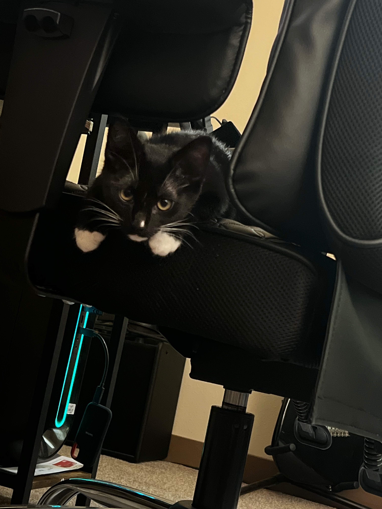
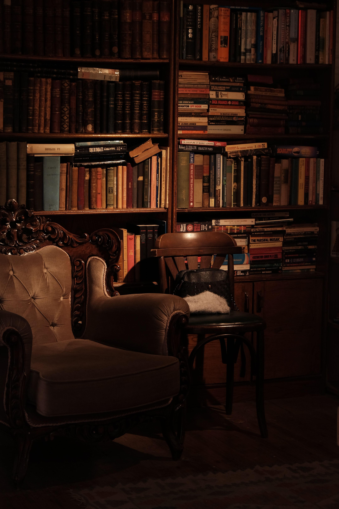

Welcome to my webpage! I started this off as a project for my Web Development I class.
I've decided to make this a space to discuss my likes and hobbies, and really just have some fun with designing a website.
My Favorite Local Stores
I love to shop locally!
- The Red Plantation: I get most of my business casual and Sunday best clothing from. The products offered change often enough to everytime I do pop in, there's always something different. They also have an extensive second hand decor section can you could get lost in for a good hour or two.
- OC College Bookstore: I love to support the school, so I have pretty much every dark-colored sweater in the store.
- Goodwill: I come to Goodwill for all the inbetweens. I get most of my athleticwear and basics from here - think oxford shirts, basic tees, socks and sleepwear. They have a bit of everything
My Cat, Hazel
Click the image to learn more about my kitten!

The Library
Click the image to visit my libary and see what I am and have been reading!

Future Edits
I wanted a space where I could post my plans for the next chapter
- Create Hazel page
- Create resume page
- Add developer's log page